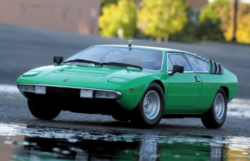
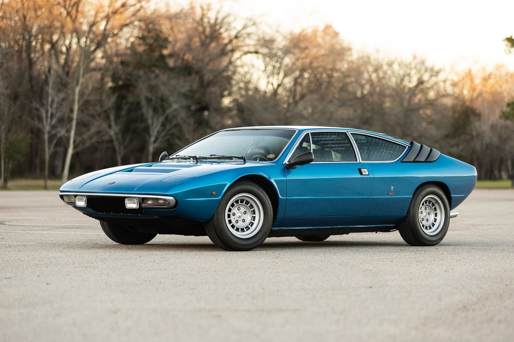

urraco


Options de moteur : L'Urraco était proposé avec trois options de moteur V8 différentes :
Urraco P200 : Un moteur V8 de 2,0 litres développant environ 182 chevaux.
Urraco P250 : Un moteur V8 de 2,5 litres générant environ 217 chevaux.
Urraco P300 : Un moteur V8 de 3,0 litres développant environ 247 chevaux.
Performances : L'Urraco offrait des performances respectables pour l'époque, avec une vitesse de pointe allant de 130 à 162 mph (210 à 261 km/h) selon le modèle.
Design : L'Urraco a été conçu par Marcello Gandini de Bertone, la célèbre firme de design italienne. Elle présentait un design élégant et angulaire avec un style distinctif en forme de coin, caractéristique de nombreuses voitures de sport de cette époque.
Intérieur : L'intérieur de l'Urraco était relativement spacieux pour une voiture de sport de sa taille, offrant des sièges confortables pour deux passagers. Le tableau de bord était bien présenté et présentait une conception centrée sur le conducteur.
Héritage : Même si l'Urraco n'était pas aussi emblématique que certains autres modèles Lamborghini, elle a joué un rôle important dans l'histoire de l'entreprise. Elle a servi de précurseur à la gamme moderne de voitures de sport à moteur V8 de Lamborghini, notamment la Jalpa et la Gallardo.
Production et rareté : L'Urraco est considérée comme une voiture classique rare, et trouver des exemplaires bien conservés peut être un défi en raison de sa production limitée. En conséquence, il a suscité l’intérêt des collectionneurs et des passionnés.
Valeur : La valeur des voitures Lamborghini Urraco varie en fonction de facteurs tels que le modèle, l'état et la rareté. Une Urraco bien entretenue et en bon état peut coûter cher sur le marché des voitures classiques.
Dans l'ensemble, la Lamborghini Urraco est un élément historique et distinctif de l'héritage automobile de Lamborghini, connue pour son design élégant et ses performances accessibles à son époque. Elle a gagné en popularité parmi les passionnés de voitures classiques qui apprécient sa place unique dans l'histoire de Lamborghini.